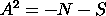
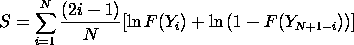

1.3. EDA Techniques
1.3.5. Quantitative Techniques
1.3.5.14. |
Anderson-Darling Test |
Test for Distributional Adequacy
The Anderson-Darling test is an alternative to the chi-square and Kolmogorov-Smirnov goodness-of-fit tests.
| H0: | The data follow a specified distribution. |
| Ha: | The data do not follow the specified distribution |
| Test Statistic: |
The Anderson-Darling test statistic is defined as

 F is the cumulative distribution function of the specified distribution. Note that the Yi are the ordered data. |
| Significance Level: |

|
| Critical Region: |
The critical values for the Anderson-Darling test
are dependent on the specific distribution that is
being tested. Tabulated values and formulas have
been published
(Stephens, 1974,
1976, 1977, 1979)
for a few specific distributions (normal, lognormal,
exponential, Weibull, logistic, extreme value type 1).
The test is a one-sided test and the hypothesis that
the distribution is of a specific form is rejected if the
test statistic, A, is greater than the critical value.
Note that for a given distribution, the Anderson-Darling statistic may be multiplied by a constant (which usually depends on the sample size, n). These constants are given in the various papers by Stephens. In the sample output below, this is the "adjusted Anderson-Darling" statistic. This is what should be compared against the critical values. Also, be aware that different constants (and therefore critical values) have been published. You just need to be aware of what constant was used for a given set of critical values (the needed constant is typically given with the critical values). |
The normal random numbers were stored in the variable Y1,
the double exponential random numbers were stored in the
variable Y2, the Cauchy random numbers were stored in the
variable Y3, and the lognormal random numbers were stored
in the variable Y4.
***************************************
** anderson darling normal test y1 **
***************************************
ANDERSON-DARLING 1-SAMPLE TEST
THAT THE DATA CAME FROM A NORMAL DISTRIBUTION
1. STATISTICS:
NUMBER OF OBSERVATIONS = 1000
MEAN = 0.4359940E-02
STANDARD DEVIATION = 1.001816
ANDERSON-DARLING TEST STATISTIC VALUE = 0.2565918
ADJUSTED TEST STATISTIC VALUE = 0.2576117
2. CRITICAL VALUES:
90 % POINT = 0.6560000
95 % POINT = 0.7870000
97.5 % POINT = 0.9180000
99 % POINT = 1.092000
3. CONCLUSION (AT THE 5% LEVEL):
THE DATA DO COME FROM A NORMAL DISTRIBUTION.
***************************************
** anderson darling normal test y2 **
***************************************
ANDERSON-DARLING 1-SAMPLE TEST
THAT THE DATA CAME FROM A NORMAL DISTRIBUTION
1. STATISTICS:
NUMBER OF OBSERVATIONS = 1000
MEAN = 0.2034888E-01
STANDARD DEVIATION = 1.321627
ANDERSON-DARLING TEST STATISTIC VALUE = 5.826050
ADJUSTED TEST STATISTIC VALUE = 5.849208
2. CRITICAL VALUES:
90 % POINT = 0.6560000
95 % POINT = 0.7870000
97.5 % POINT = 0.9180000
99 % POINT = 1.092000
3. CONCLUSION (AT THE 5% LEVEL):
THE DATA DO NOT COME FROM A NORMAL DISTRIBUTION.
***************************************
** anderson darling normal test y3 **
***************************************
ANDERSON-DARLING 1-SAMPLE TEST
THAT THE DATA CAME FROM A NORMAL DISTRIBUTION
1. STATISTICS:
NUMBER OF OBSERVATIONS = 1000
MEAN = 1.503854
STANDARD DEVIATION = 35.13059
ANDERSON-DARLING TEST STATISTIC VALUE = 287.6429
ADJUSTED TEST STATISTIC VALUE = 288.7863
2. CRITICAL VALUES:
90 % POINT = 0.6560000
95 % POINT = 0.7870000
97.5 % POINT = 0.9180000
99 % POINT = 1.092000
3. CONCLUSION (AT THE 5% LEVEL):
THE DATA DO NOT COME FROM A NORMAL DISTRIBUTION.
***************************************
** anderson darling normal test y4 **
***************************************
ANDERSON-DARLING 1-SAMPLE TEST
THAT THE DATA CAME FROM A NORMAL DISTRIBUTION
1. STATISTICS:
NUMBER OF OBSERVATIONS = 1000
MEAN = 1.518372
STANDARD DEVIATION = 1.719969
ANDERSON-DARLING TEST STATISTIC VALUE = 83.06335
ADJUSTED TEST STATISTIC VALUE = 83.39352
2. CRITICAL VALUES:
90 % POINT = 0.6560000
95 % POINT = 0.7870000
97.5 % POINT = 0.9180000
99 % POINT = 1.092000
3. CONCLUSION (AT THE 5% LEVEL):
THE DATA DO NOT COME FROM A NORMAL DISTRIBUTION.
- The first section prints the number of observations and
estimates for the location and scale
parameters.
- The second section prints the upper critical value for the
Anderson-Darling test statistic distribution corresponding to
various significance levels. The value in the first column,
the confidence level of the test, is equivalent to
100(1-). We reject the
null hypothesis at that significance level if the
value of the Anderson-Darling test statistic printed in
section one is greater than the critical value printed in the
last column.
- The third section prints the conclusion for a 95% test.
For a different significance level, the appropriate
conclusion can be drawn from the table printed in section
two. For example, for
= 0.10, we look at the row for 90% confidence and compare
the critical value 0.656 to the Anderson-Darling test statistic
(for the normal data) 0.256. Since the test statistic is
less than the critical value, we do not reject the null
hypothesis at the
= 0.10 level.
As we would hope, the Anderson-Darling test accepts the hypothesis of normality for the normal random numbers and rejects it for the 3 non-normal cases.
The output from other statistical software programs may differ somewhat from the output above.
- Are the data from a normal distribution?
- Are the data from a log-normal distribution?
- Are the data from a Weibull distribution?
- Are the data from an exponential distribution?
- Are the data from a logistic distribution?
There are many non-parametric and robust techniques that do not make strong distributional assumptions. However, techniques based on specific distributional assumptions are in general more powerful than non-parametric and robust techniques. Therefore, if the distributional assumptions can be validated, they are generally preferred.
Kolmogorov-Smirnov Test
Shapiro-Wilk Normality Test
Probability Plot
Probability Plot Correlation Coefficient Plot